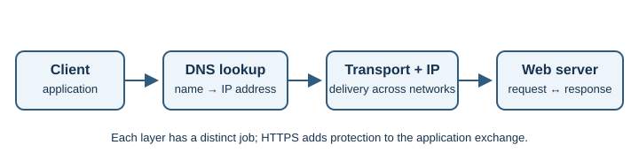
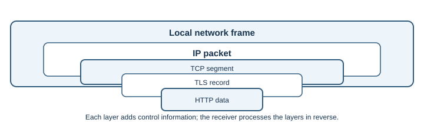

Networking and Protocols¶
This section explains how computers communicate and how information travels between a client and a server across the Internet.
Think of a web request as several cooperating layers: a name is resolved to an address, the network carries packets, a transport protocol manages delivery, and an application protocol describes the request and response.

One request, several layers¶
Imagine entering https://example.com/products in a browser. The browser
needs the server's address, a route to reach it, a transport for delivery,
protection for the connection, and an application protocol to request the
page. These jobs are related, but one layer's success does not prove that the
next layer is healthy.

| What you observe | What it tells you | What it does not prove |
|---|---|---|
| DNS returned an address | The name was resolved by that resolver | That the destination is reachable |
| A TCP connection opened | A TCP endpoint accepted that connection | That the HTTP request will succeed |
| HTTPS certificate is valid | The peer passed certificate checks for the host | That the site or its content is trustworthy |
HTTP returned 200 |
The response was successful by HTTP semantics | That a business operation did what you intended |
Learning objectives¶
- Understand the Internet's basic building blocks and addressing.
- Follow the journey of a request through DNS, transport, and web protocols.
- Explain how a device joins a local network and finds its next-hop router.
- Recognize the roles of encryption, persistent connections, and ports.
- Choose troubleshooting tools based on which network layer may have failed.
Topics¶
- Internet Fundamentals
- IP Addressing
- Ethernet and Wi-Fi
- ARP and IPv6 Neighbor Discovery
- DHCP
- ICMP and Network Diagnostics
- TCP and UDP
- DNS
- HTTP and HTTPS
- TLS and SSL
- QUIC and HTTP/3
- WebSockets
- Email Protocols
- SSH and SFTP
- VPNs and Tunneling
- NTP and Network Time Synchronization
- MQTT
- gRPC
- Network Ports
How protocols appear in real services¶
Most public websites use the same Internet building blocks. The business may have additional identity checks, security controls, or private connections, but a familiar website URL does not imply a special transport protocol.
| Service example | Common network path | Why these protocols fit |
|---|---|---|
| Shopping, news, or video website | DNS, Wi-Fi or Ethernet, IP, TCP or QUIC, TLS, HTTP; often a CDN | HTTP delivers pages and APIs; TLS protects data in transit; a CDN can serve content closer to users |
| Online banking website or app | Usually the same DNS, IP, TLS, and HTTPS foundation; may also use MFA and risk checks | Standard web protocols interoperate with browsers; authentication, authorization, fraud controls, and payment processing are additional application/system responsibilities |
| Crypto exchange or wallet interface | HTTPS for pages and API calls; WebSockets may stream prices; a blockchain network uses its own peer and transaction rules | A web interface and a blockchain are different protocol layers; using HTTPS does not mean a blockchain transaction is sent as an ordinary web page |
| Government service portal | Usually DNS, IP, TLS, and HTTPS; some internal services may use private networks or additional identity systems | Common web standards support public access; identity proofing, accessibility, audit, and policy requirements sit above the basic transport |
| Email service | DNS records to locate mail servers; SMTP to send mail; IMAP or POP3 for mailbox access; TLS commonly protects connections | Email needs separate protocols for delivery between mail servers and access by a user's mail client |
| Remote server administration | IP routing followed by SSH, commonly over TCP port 22 | SSH provides an authenticated encrypted terminal and related secure functions; access should be restricted to authorized administrators |
These are typical patterns, not guarantees about any particular provider. Financial, cryptocurrency, and government systems may also use private networks, specialized payment or identity systems, or organization-specific controls that are not visible from the public website. Never infer that a service is secure or trustworthy solely because it uses HTTPS.
Suggested learning path¶
- Begin with Internet Fundamentals, then learn IP addressing.
- See how a device joins a network with Ethernet and Wi-Fi, gets configuration through DHCP, and finds a local next hop with ARP and IPv6 Neighbor Discovery.
- Compare TCP and UDP, then learn how ports direct data to applications.
- Follow name resolution in DNS, then study TLS and SSL and HTTP and HTTPS. Continue with QUIC and HTTP/3 to understand the modern UDP-based web transport.
- Explore other application protocols: WebSockets for interactive communication, Email Protocols for mail, SSH and SFTP for remote access, MQTT for device messaging, and gRPC for service-to-service APIs.
- Learn how VPNs and Tunneling connect private networks and why NTP matters to distributed systems.
- Use ICMP and Network Diagnostics to understand common troubleshooting signals.
When diagnosing a problem, ask which step failed rather than treating "the Internet is down" as one explanation. A name lookup issue, blocked connection, invalid certificate, and application error have different causes and different tools. A ping response, for example, is not required for an HTTPS service to work.